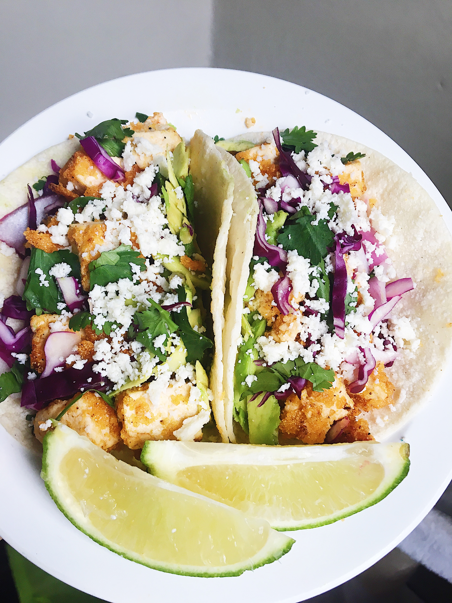

Crispy Tofu Tacos
Ingredients:
- 1 package extra firm tofu
- 1/4 cup sriracha
- 1/4 cup honey
- 1/2 cup cornmeal
- Garlic, minced
- Black Pepper
- Pinch of Salt
- 1 tsp. smoked paprika
- 1 tsp. cayenne pepper
- Oil for cooking
- Flour or corn torillas
Toppings:
- cilantro
- 1/2 cup red onion
- Avocado
- Cotija Cheese, crumbled/grated
- Sour Cream
Note: This delicious Avocado-Lime Crema another great topping idea for these!
Directions:
- Cut the tofu in cubes and throw the cubes into a bowl with the sriracha and honey. Toss until cubes are evenly coated.
- In a bowl, mix the cornmeal, black pepper, salt, smoked paprika, and cayenne pepper together.
- Add the coated tofu cubes to the cornmeal mixture and toss until evenly coated. Set aside.
- Before you begin cooking the tofu cubes, prepare any toppings you'd like.
- Put oil and minced garlic into a medium saucepan and turn heat to medium-high.
- Add tofu cubes to saucepan and cook, making sure to get each side, until crispy - about 8-10 minutes. Once crispy, remove from heat.
- If desired, warm tortillas in a different saucepan.
- Put the crispy tofu cubes into a tortilla and add all your favorite toppings. Enjoy!
Contact me
Email the recipe's creator with any comments or questions.
University of Montana -
32 Campus Drive,
Missoula, MT 59801